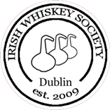
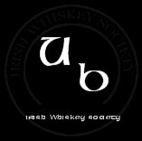
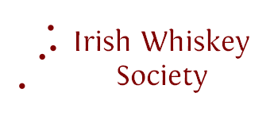

Page 6 of 7
Society Logo Update

Posted:
Fri Jul 17, 2009 11:22 amby TheWhiskeyBro
I am having the final meeting with the graphic designer about the logo next Monday 20th July before he commences the design stage, this will be the last opportunity to receive input about the design elements before he begins to produce a number of 'roughs' for us (I'm hoping he will produce 3, but I have to finalise that next Monday).
As defined in the June committee meeting, the purpose of the logo is to have a clear identity for the society. It is planned to use the logo on Publicity, Media Press Releases, Business Cards, Membership Cards, Letterhead, The Website etc. and unusually it has to be something that can be etched on a ‘Glencairn’ whiskey tasting glass also.
The committee has agreed it should be a modern logo for a modern society however we also wish to in some way recognise, celebrate and convey the history/heritage of Irish Whiskey within the logo somehow.
The ‘Logo’ thread will be the main source of guidance for the designer. At this stage the shortlisted ideas are (1)the circular logo (like a postage frank) which is popular with some members, the main drawback with this design is commonly used by other groups (2) the rectangular frank with rounded edges (being used as a stamp on the forthcoming bottling with the text ‘Selected by the Irish Whiskey Society’ as seen on the membership card (3) a variation on the barrel logo (3a)a derivative of the line drawing of ‘e’ design within a barrel end shape (3b) a stencilled barrel end.
In addition I will be bringing some materials such as books, bottles, leaflets, glencairn glasses to provide him with sources of additional inspiration.
I notice from the thread that more recently a fourth idea is emerging (4) the 'CUBE' lettering incorporated in a logo which could be interesting as it is enigmatic and generates discussion about what the letters stand for and who the society is, stimulating curiousity and interest in the society.
The committee has so far decided that essential requirements include the name ‘Irish Whiskey Society’, year of establishment/founded 2009, and a symbol/brand.
The original target was by mid August but I will have a clearer picture after next Monday's meeting, but because the work is essentially being done gratis we are subject to the designers work schedule.
The agreement so far is the initial design is to be produced free of charge, the designer himself is quite interested in the project, however future work is likely to involve some fee.
In addition he has been invited gratis to a tasting of his choice, and subject to Society approval he may receive a bottle of the Grand Crew for his efforts.
I would welcome it if people wish to give some 'focussed' feedback ahead of next Monday's meeting, as I will be giving guidance to the designer and I need to be as clear as possible about what we hope to achieve before we let him weave his magic on our logo. Hopefully he will produce a design(s) that everyone feels represents the society.
Re: Society Logo
Posted:
Fri Jul 17, 2009 11:54 amby DavidH
Sounds like you have nailed it.
From the website point-of-view, I'd also like saturated colours. It's very difficult to pick up the unsaturated sort on the rest of the page. And, please, no swathes of orange! That would kill any hopes of an attractive site.
Re: Society Logo
Posted:
Fri Jul 17, 2009 12:22 pmby John
I like that CUBE design. It is unique amongst the ideas surfacing so far and I think that the overly-used barrell and still motifs have been manipulated to bits over the years by other groups. How to place the CUBE concept in a whiskey-related setting for a logo design will be the real challenge.
Fair play for getting it all to this point, clealy a lot of work has gone into this from all quarters.
J.
Re: Society Logo
Posted:
Fri Jul 17, 2009 12:44 pmby jcskinner
A cube in a whiskey-related setting?

Re: Society Logo Update
Posted:
Fri Jul 17, 2009 12:49 pmby IrishWhiskeyChaser
TheWhiskeyBros wrote:
The committee has agreed it should be a modern logo for a modern society however we also wish to in some way recognise, celebrate and convey the history/heritage of Irish Whiskey within the logo somehow.
I'm all for a cool design but just be cautious, modern is fine as long as it will also be classical. Nothing worse than having a modern design and it looking totally crap in 5 years time because it is no longer fashionable.
TheWhiskeyBros wrote:
The ‘Logo’ thread will be the main source of guidance for the designer. At this stage the shortlisted ideas are (1)the circular logo (like a postage frank) which is popular with some members, the main drawback with this design is commonly used by other groups (2) the rectangular frank with rounded edges (being used as a stamp on the forthcoming bottling with the text ‘Selected by the Irish Whiskey Society’ as seen on the membership card (3) a variation on the barrel logo (3a)a derivative of the line drawing of ‘e’ design within a barrel end shape (3b) a stencilled barrel end.
1.
- 
- Stamp
- IWSlogo7.jpg (39.59 KiB) Viewed 3207 times
2.

- Square Stamp
- IWSlogo3.jpg (22.71 KiB) Viewed 3207 times
3. No decent Image 3a

- BarrelE
- IWSlogo2.png (8.12 KiB) Viewed 3207 times
3b

- SpringbankBarrel
- SpringbankBarrels.jpg (15.94 KiB) Viewed 3207 times
TheWhiskeyBros wrote:
I notice from the thread that more recently a fourth idea is emerging (4) the 'CUBE' lettering incorporated in a logo which could be interesting as it is enigmatic and generates discussion about what the letters stand for and who the society is, stimulating curiousity and interest in the society.
Well it looks like the committee are slacking up and not paying attention ... I think we'll have to get the committee marshalled to spend less time drinkin whiskey and eating pizza and get them to do more work


... Originally this idea grew from David who started the play on the letter E which people seemed receptive to ... However the LA whisk(e)y Socitey had beaten us to this idea ... I then took another slant on the idea and played on UB (usice beatha) but did not seem to have the same effect ... then Michael with a stroke of genius came up with CUBE. Which as you say is interesting, invokes curiosity and in it's English form modern (CUBE). This for me personally is one of the strongest ideas we've had yet.

- IWSlogo1.png (4.32 KiB) Viewed 3207 times
- 
- UB
- IWSUBlogo.jpg (5.14 KiB) Viewed 3207 times

- CUBE
- IWSlogo4.jpg (18.4 KiB) Viewed 3207 times
TheWhiskeyBros wrote:
I would welcome it if people wish to give some 'focussed' feedback ahead of next Monday's meeting, as I will be giving guidance to the designer and I need to be as clear as possible about what we hope to achieve before we let him weave his magic on our logo. Hopefully he will produce a design(s) that everyone feels represents the society.
Personally I'd be happy in exploring ideas 1, 3 & 4 however I feel idea 2 is a bit light as a general log. This to me is only good as an associate stamp that we could use on products etc as a secondary stamp.
It is obvious that a designer need a focus but I feel that limiting it to 4 concentrated ideas may inhibit the designer. I feel that possibly we should have a 5th logo slot and that should be for the designers' own free interpretation with no remit from us if the designer so pleases to obligue of course. Remember this is their realm and they may have spare ideas that they are just waiting for the right opportunity to use on.
That is it from me I think

Great work and really looking forward to the end results.
Re: Society Logo
Posted:
Fri Jul 17, 2009 1:54 pmby John
What can I say jc - on the ball as usual!!
Though I prefer it without the frozen water; oh no I've had a revelation, ok now I'm torn!
Down with the cube.
J.
Society Logo - 5 Designs
Posted:
Fri Jul 17, 2009 3:09 pmby TheWhiskeyBro
Bear in mind that it is one thing to produce a sketch or five, but there would be an enormous amount of work for a graphic designer to produce five 'roughs' on their design software. Someone back me up here... hence in my post I am trying to keep this focussed on two or three ideas for the designer to work on including the giving the designer 'poetic licence' to introduce his own interpretation. Cost is an issue for any embryonic society, so unless we wish to invest money in the designers time and creativity we have to have realistic about what we can expect gratis.
Thoughts please!!!
Re: Society Logo
Posted:
Fri Jul 17, 2009 3:48 pmby IrishWhiskeyChaser
It may not be that big of a deal as they are only explorations rather than serious designs and then the wining design would be properly worked on and various versions produced in various formats which I thought was where a lot of time is spent.
However I agree we don't want to take the proverbials either so thanks for highlighting.
What about giving over the 5 or 6 suggestions (to include free interpretation) and let him chose 3 to produce for us.
Lastly I would not overly labour over the Glencairn & embroidery issue. I have been on to Glencairn and promotions firms and they are all confident they can reproduce most logo's and as long as it is not very intricate it can be reproduced. Obviously the simpler it is the better. All the styles we have currently are fairly basic.
Re: Society Logo - 5 Designs
Posted:
Fri Jul 17, 2009 4:08 pmby DavidH
TheWhiskeyBros wrote:Cost is an issue for any embryonic society, so unless we wish to invest money in the designers time and creativity we have to have realistic about what we can expect gratis.
I'm willing to invest money in some proper treatments with plenty of input from a designer. What I'm a little afraid of here is that because we are going down the cheapskate road that we will get some glossy versions of our own ideas and then the members will be asked to choose their favourite. We suck at design, and should not be let near it.
Let's see if this designer can speak our language and then give him a budget. A complimentary website design would not be a frivolous expense either.
We will benefit from this stuff for years. It's a good investment.
Re: Society Logo
Posted:
Fri Jul 17, 2009 6:48 pmby PureDrop
FYI
The logo appearing on the "Grand Crew" back label is currently the following - I guess this corresponds to idea (2) above.
/M
Re: Society Logo
Posted:
Thu Aug 13, 2009 10:23 amby varizoltan
Leo, did you get anything back from your friend

2 moths is gone again and nothing happened
Re: Society Logo
Posted:
Fri Aug 21, 2009 1:36 amby varizoltan
how is this?
Re: Society Logo
Posted:
Tue Nov 24, 2009 11:57 amby Whiskey Pilgrim
Kaixo Guys,
Lets take a look at the Typical (or steriotypical) icons of Irishiness
1.Irish Language
2.Shamrock
3.Harp
4.Claddagh
5.whiskey
now lets take a look at the typical images for the whiskey industry
1.whiskey glasses
2.Stills
3.barrels
4.barrel ends(white painted)
5.barley straw
now lets look at Irish whiskey in terms of history and contempary style
1.tripple distill
2.double distill
3.4 distilleries
now look at the IWS club membership profile,aspirations,etc
now taking all of the above into account with a modern contempary style we should be to keep most people happy.
Agur
Re: Society Logo
Posted:
Tue Nov 24, 2009 1:41 pmby varizoltan
why do not you put these together and see what is comes out of it?
you may be the winner for a logo design
Whiskey Pilgrim wrote:Kaixo Guys,
Lets take a look at the Typical (or steriotypical) icons of Irishiness
1.Irish Language
2.Shamrock
3.Harp
4.Claddagh
5.whiskey
now lets take a look at the typical images for the whiskey industry
1.whiskey glasses
2.Stills
3.barrels
4.barrel ends(white painted)
5.barley straw
now lets look at Irish whiskey in terms of history and contempary style
1.tripple distill
2.double distill
3.4 distilleries
now look at the IWS club membership profile,aspirations,etc
now taking all of the above into account with a modern contempary style we should be to keep most people happy.
Agur
Re: Society Logo
Posted:
Tue Nov 24, 2009 1:46 pmby varizoltan
at the last committee meeting, te logo was an importantone
we had more icons than the above and narrowed it down to 8-10 and it is back with the designer again
hopefully something good comes out of him thistime
but anything yous have is welcome,
show it here and we see
Re: Society Logo
Posted:
Wed Feb 17, 2010 2:50 pmby PureDrop
OK some more logo designs have made an appearance over the past few months.
The following two came courtesy of a friend of JohnM

- iws1.jpg (42.48 KiB) Viewed 3153 times

- iws2.jpg (32.81 KiB) Viewed 3153 times
DavidH had the inspiration to use the existing distillery locations as drivers for a logo, resulting in the following:
- 
- iwsdots.png (3.95 KiB) Viewed 3153 times
Re: Society Logo
Posted:
Wed Feb 17, 2010 2:55 pmby PureDrop
Taking DavidH's dots as a basis, I had the notion to replace the dots with amber drops - the link to whiskey being of course "drop of the crathur", "the pure drop", "a wee drop", etc.

- text+drops.jpg (14.42 KiB) Viewed 3151 times
or

- dropsIRL2.jpg (16.18 KiB) Viewed 3151 times
The "drops" can also serve as a "Motif" for aspects of the website, presentations, ...
You can even have fun with a drop.

- drop.gif (2.47 KiB) Viewed 3151 times
Again, just inspiration.
/M
Re: Society Logo
Posted:
Wed Feb 17, 2010 3:06 pmby John
Ok, someone take the 'Magic Eye' book away from JohnM immediately
The location/whiskey drop might serve to limit us in the future? Unless we are planning/prepared to revise the logo every couple of years?
I had actually forgotten about all this! I'm surprised though that at this stage we are still taking 'entries'; had a short-list not been drawn up a while back? Perhaps a document could be drafted with the suggested logos and members could get a perspective of what is still 'on the table' and vote accordingly?
Just a thought.
J.
Re: Society Logo
Posted:
Wed Feb 17, 2010 3:51 pmby DavidH
John wrote:The location/whiskey drop might serve to limit us in the future? Unless we are planning/prepared to revise the logo every couple of years?
Right, that's the idea. It would be a way of acknowledging the coming onstream of a new distillery, like the way the EU flag used to change every time a new member joined. It will happen very infrequently.
Re: Society Logo
Posted:
Fri Apr 16, 2010 12:20 amby varizoltan
just another idea
Re: Society Logo
Posted:
Mon Apr 26, 2010 4:16 pmby John
Hi All,
Will we have a selection of whatever logos are still in the running for review at the meeting on this Thursday?
Cheers,
John.
Re: Society Logo
Posted:
Mon Apr 26, 2010 4:59 pmby DavidH
At the last committee meeting we had some work ups from a professional graphic artist, based on the ideas in this thread. We ruled out some and sent the others back to develop some variations. That's where it stands at the moment.
We really, really, really want to have a logo in place in May. It has been a very contentious process because everyone has an opinion and no two opinions coincide. You can see that no consensus emerged on this thread, for example. But we are nearly there, at long last.
Re: Society Logo
Posted:
Sat May 29, 2010 4:13 pmby IrishWhiskeyChaser
Any one care to comment of the logo ... I have not seen what was shown on Thursday but saw a version of it. So if someone can post it up here that would be great.
Re: Society Logo
Posted:
Sat May 29, 2010 9:36 pmby John
In fairness, it doesn't look bad and it seems to work on the shirts and membership cards equally well. However, to be honest though Adrian I was very surprised. I can't really see how the logo represents Irish whiskey? One member was even heard to ask what the crop-circles represented
Apart from that, I am very dissapointed that the Committee did not have the courtesy to put the proposed logo to the general membership for adoption beforehand. I wouldn't mind only the selected one wasn't featured at all in any fashion up to now and I can't understand what process led to its' selection. Shame really and a bit of a missed opportunity to reach a truly democratic decision within the society. It would make you wonder what else is being decided behind closed doors

. We really should have the notes of committee meetings published for transparency purposes
Re: Society Logo
Posted:
Sun May 30, 2010 6:02 pmby IrishWhiskeyChaser
Fair point John and I know similar points were argued within the committee but I think it just got out of hand and became dragged out so it ended up that it was not progressing. In the end a professional was commissioned to create a logo from scratch and just knock it on the head.
If it proves decisive the new committee which would be voted in next year can work on a new design.
As a fairly active member you might even consider joining the committee yourself.